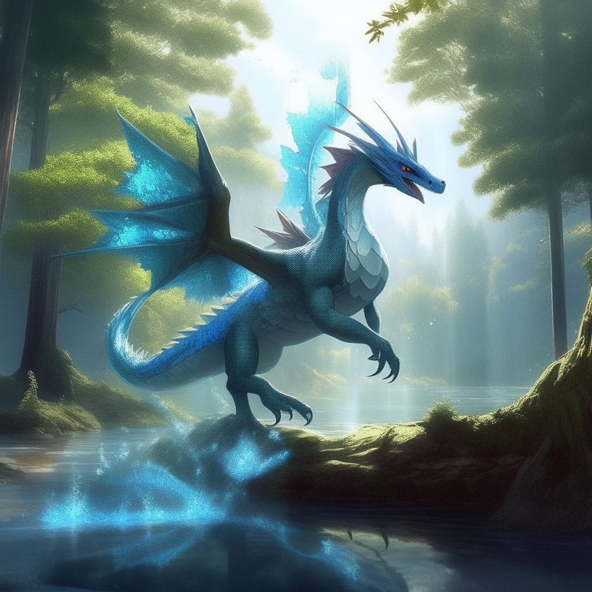

URSAZIKEN
FROSTDRAGON

Pokemon tipo Dragón-Hielo. Los dragones de hielo habitan en montañas heladas y respiran escarcha para cubrir los picos. Sus escamas son tan azules y frías como el hielo glacial. Con alas fuertes, Frostdragon cabalga sobre los vientos árticos. Durante las tormentas de nieve, los viajeros sólo ven sus sombras azules pasando por encima. .png)